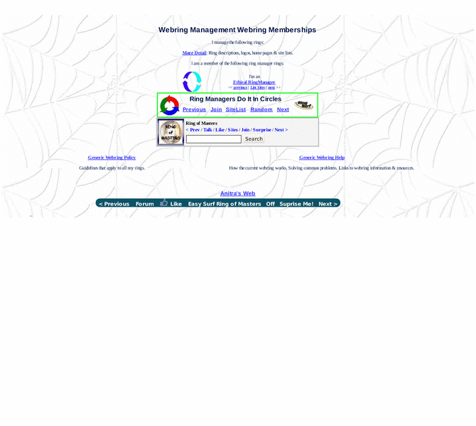

Previewing: Anitra's Web: My Webrings, and Webring Help Previewing: Anitra's Web: My Webrings, and Webring Help 
Use the left/right red arrow controls to navigate through this ring - Click the preview image to visit the member site.

Over 1000 pages from homelessness and bipolar disorder to sea chanteys and chocolate, including book revies, poems, free graphics, tutorials and html help.
Anitra's Web: My Webrings, and Webring Help owned by:
 anitra2001 anitra2001
A member of the original webring since 12/18/2009.
|
|